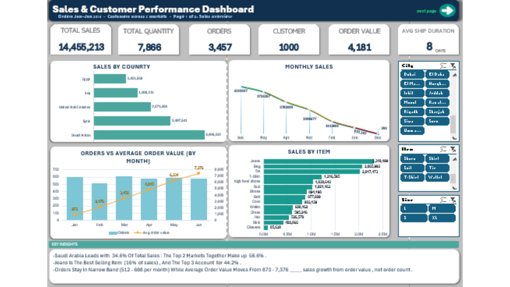
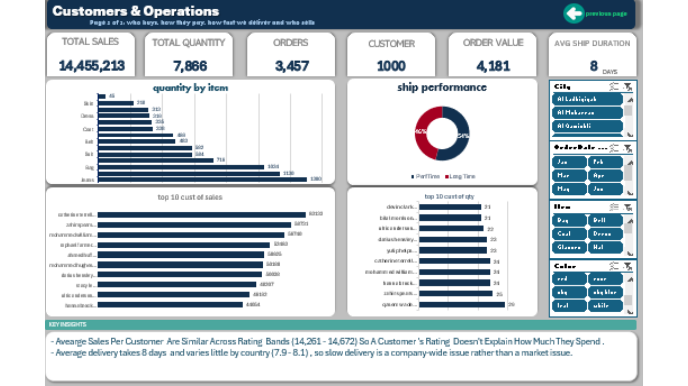

Sales & Customer
Performance Analysis
Turning three connected datasets into a clear view of sales performance, customer activity, product contribution, and delivery operations across five markets.
Project snapshot
This case study uses customer, order, and product records to explore commercial performance and operational patterns. The workbook includes prepared analysis tables, pivot summaries, helper calculations, and a two-page dashboard.
Explore the dashboard data
Use the filters to inspect market-level sales and product contribution. Values below are derived from the workbook's pivot summaries.
Sales by market
Sales by product
Monthly sales trend
Order count by month
What the analysis reveals
Sales performance
- Saudi Arabia contributes approximately 34.6% of reported sales.
- Saudi Arabia and Syria together contribute approximately 58.6% of sales.
- Jeans is the top product by sales at approximately 2.31M (16.0%).
- The top three products contribute approximately 44.2% of total sales.
Customer & operations
- Average sales per customer are close across the three customer-rating bands (approximately 14.3K–14.7K).
- Average delivery duration is approximately eight days.
- 1,863 orders (53.9%) are classified as “Perf Time”; 1,594 (46.1%) as “Long Time”.
- Delivery averages by market are tightly grouped around eight days.
Data preparation & methodology
- Reviewed three source tables: Customers (1,000 rows), Orders (3,457 rows), and Products (387 rows).
- Prepared a consolidated order analysis table containing 3,457 records and 15 fields.
- Derived sales as quantity multiplied by unit price, delivery duration, country, product, month, and customer rating fields.
- Built pivot summaries for sales by market, month, and product; quantity by product; payment method by market; customer metrics; and shipping duration.
- Used helper calculations to feed KPI cards and dashboard visuals.
Dashboard preview
The two dashboard pages cover sales performance and customer / operations analysis. Customer-level identifying information is not included in this public preview.
Page 1 · Sales Overview

Page 2 · Customers & Operations

Download the dashboard & datasets
Download the complete Excel dashboard workbook to explore both dashboard sheets, pivot tables, and the underlying prepared analysis. A PDF version is also available for quick review without Excel.
Public sample files retain the analytical fields while removing customer names, phone numbers, and email addresses. Customer IDs are replaced with project-specific pseudonymous IDs.
The downloadable Excel file is the project dashboard workbook prepared for this portfolio. The original source files remain private.Limitations & review notes
- The source workbook does not clearly define a currency; values are shown as numeric amounts only.
- The exact threshold used for “Perf Time” versus “Long Time” should be confirmed with the dataset owner.
- The date range should be confirmed from the complete source records before making period-wide claims.
- Customer-level sales rankings are intentionally omitted from this public page; the helper table was corrected, but this case study focuses on aggregate findings.
- Observed patterns are descriptive and do not establish causation.